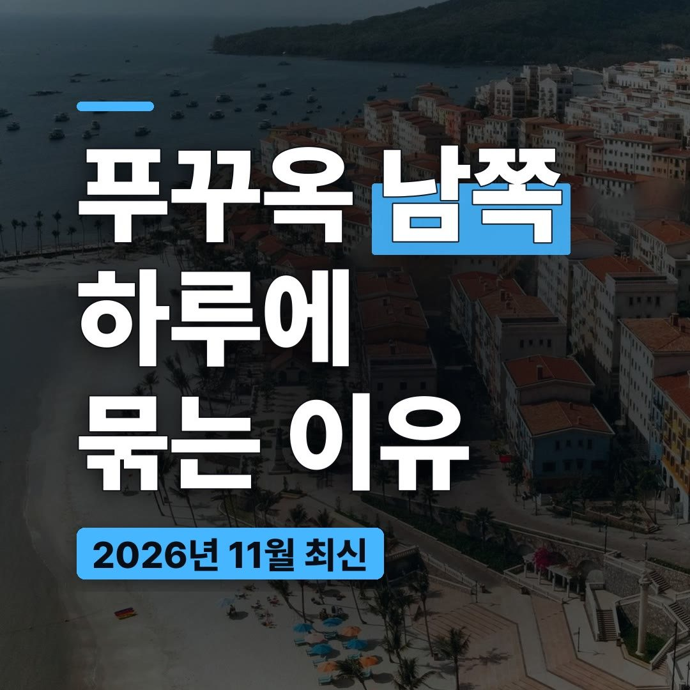
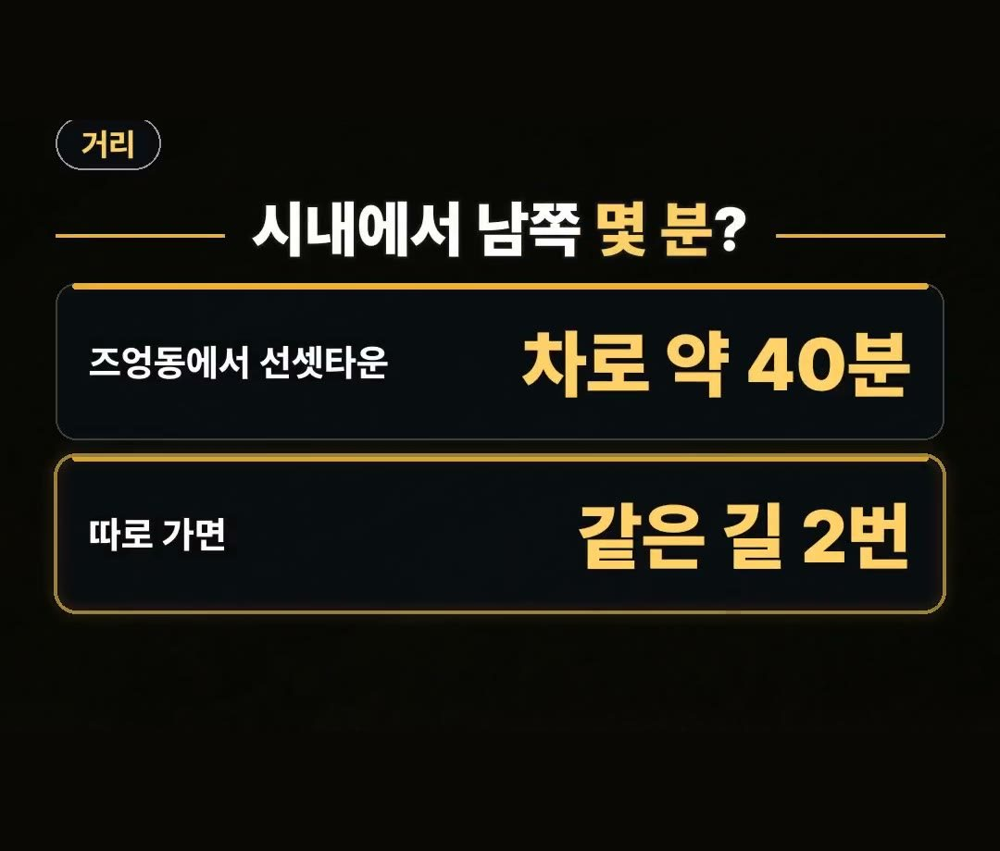
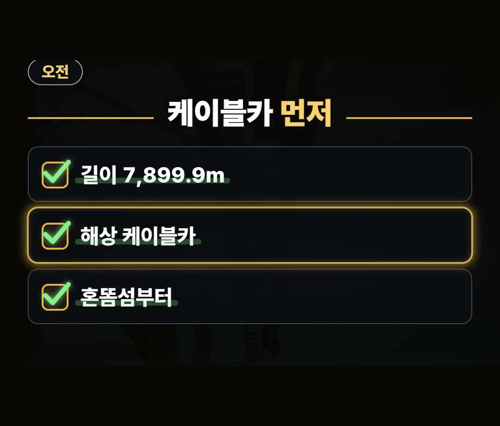
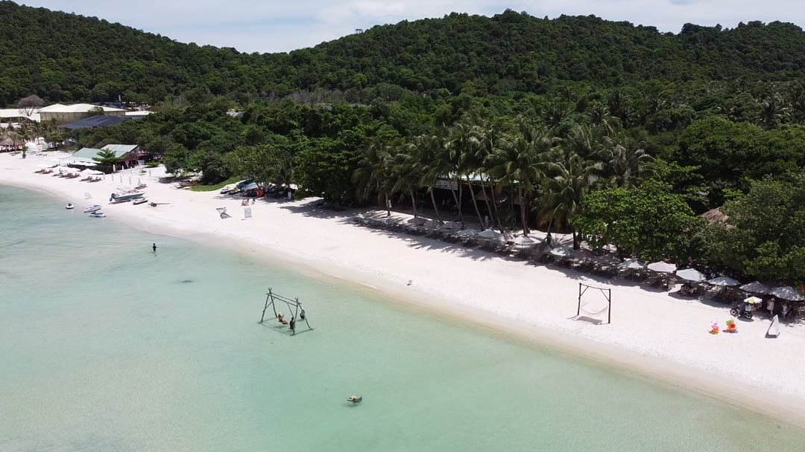
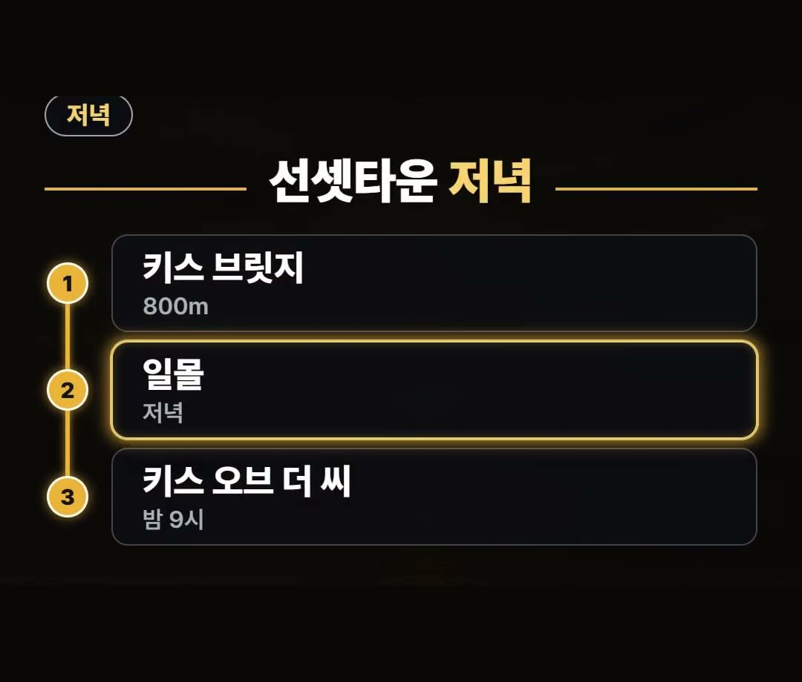
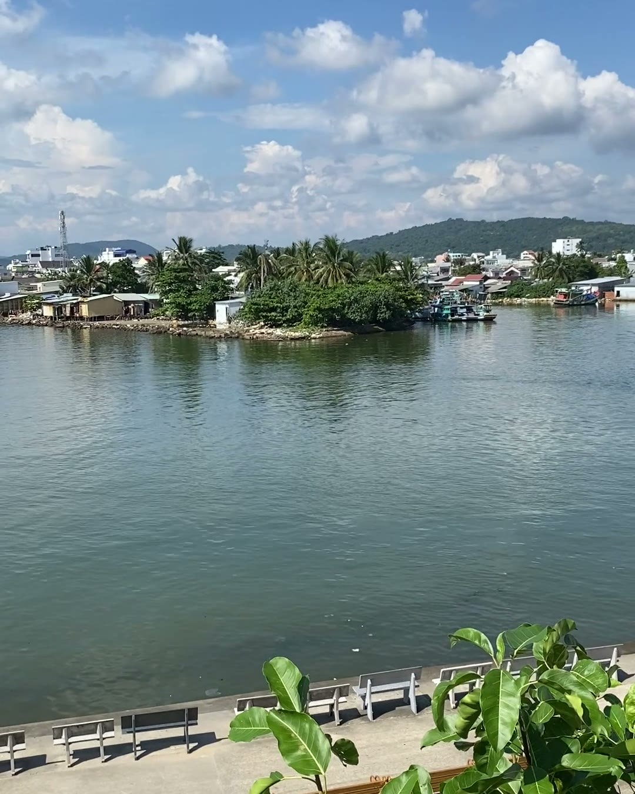

푸꾸옥 여행 코스, 혼똠섬 케이블카와 키스 브릿지를 하루에 묶는 남쪽 동선
※ 이 글에는 제휴 링크가 포함되어 있으며, 링크를 통해 예약·구매하시면 일정 수수료를 받을 수 있습니다. (가격은 같습니다)
※ 이 포스팅은 쿠팡 파트너스 활동의 일환으로, 이에 따른 일정액의 수수료를 제공받습니다.
푸꾸옥 여행 코스의 결론부터 말씀드리면, 혼똠섬과 선셋타운은 같은 날 묶어서 다니는 게 좋아요.
둘 다 푸꾸옥 남쪽 안토이 쪽에 있기 때문인데요, 왜 그런지와 하루 순서는 아래에서 차례대로 풀어 볼게요.
즈엉동에서 선셋타운까지는 차로 약 40분이에요.
남쪽을 따로따로 가면 같은 길을 2번 오가게 되니, 하루에 묶는 것만 기억하세요 🌅 아침 케이블카부터 밤 공연 뒤 돌아가는 차까지 순서대로 정리해 봤어요.

푸꾸옥 여행 코스, 남쪽을 하루에 묶는 이유
푸꾸옥에서 많이 찾는 혼똠섬과 선셋타운은 둘 다 남쪽 안토이 쪽에 있어요.
시내 쪽인 즈엉동에 숙소를 잡았다면 이동 시간을 먼저 따져 봐야 합니다.
- 즈엉동에서 선셋타운까지: 차로 약 40분
- 두 곳을 다른 날 가면: 같은 길을 2번 오가요
그래서 이 글의 동선은 남쪽 두 곳을 하루에 이어서 도는 순서로 짰어요.

아침엔 혼똠섬 케이블카부터
하루의 시작은 혼똠섬으로 가는 해상 케이블카예요.
- 케이블카 길이: 7,899.9m
- 바다 위를 지나 혼똠섬으로 들어갑니다
아침에 케이블카로 혼똠섬부터 가 두면, 섬에서 시간을 보낸 뒤 오후에 선셋타운으로 넘어가는 순서가 자연스럽게 이어져요.
클룩의 「썬월드 혼똠 티켓」 상품은 2026년 11월 9일 기준 별점 4.6이고, 후기에는 케이블카 이야기가 많이 보여요.

섬 일정을 마치면 오후 4시쯤 선셋타운으로 넘어가는 순서를 추천해요.
해 지기 전에 도착해 두면 다리와 마을을 여유 있게 둘러볼 수 있어요.

키스 브릿지 일몰과 밤 9시 공연
선셋타운의 키스 브릿지는 800m 길이의 보행로예요.
이곳에서 일몰을 보고, 밤에는 공연으로 하루를 마무리합니다.
- 키스 브릿지: 800m 보행로
- 일몰: 저녁
- 키스 오브 더 씨 공연: 밤 9시
일몰과 공연 사이 시간에는 마을을 천천히 걸어 보세요.

공연 뒤 돌아갈 차는 미리
밤 공연이 끝난 뒤에는 돌아가는 차가 적어요.
즈엉동까지 차로 약 40분 거리이니, 돌아갈 차는 미리 잡아 두는 게 마음이 편합니다.
특히 부모님이나 아이와 함께라면 공연 전에 돌아가는 방법부터 정해 두세요.

푸꾸옥 여행 코스, 남쪽 하루 순서 한눈에
지금까지의 순서를 한 줄씩 정리하면 이렇습니다.
- 아침: 해상 케이블카로 혼똠섬부터
- 낮: 혼똠섬에서 시간 보내기
- 오후 4시쯤: 선셋타운으로 이동
- 저녁: 키스 브릿지에서 일몰
- 밤 9시: 키스 오브 더 씨 공연
- 공연 뒤: 미리 잡아 둔 차로 숙소로
이 순서의 핵심은 남쪽 안토이 쪽 두 곳을 같은 날 이어 붙이는 거예요.
혼똠섬을 하루, 선셋타운을 또 하루로 나누면 즈엉동과 남쪽 사이를 다시 오가야 하니, 그 시간만큼 다른 일정에 쓸 시간이 줄어들어요.
반대로 남쪽을 하루에 묶어 두면 나머지 날에는 숙소 주변 일정이나 다른 코스를 여유 있게 넣을 수 있어요.
푸꾸옥이 처음이라면 먼저 남쪽 하루를 달력에 박아 두고, 나머지 날을 그 앞뒤로 채우는 방식으로 일정을 짜 보세요.
이 코스를 짤 때 챙길 것도 적어 둘게요.
- 남쪽 하루는 아침에 일찍 나서는 날로 잡기
- 선셋타운에는 오후 4시쯤 도착하도록 섬 일정 끝내기
- 밤 9시 공연을 볼 거라면 돌아갈 차부터 정하기
- 케이블카 티켓은 미리 예약해 두기
남쪽에서 하루를 통째로 보내는 일정이라 짐은 가볍게, 숙소로 돌아가는 방법은 무겁게 챙기는 게 좋아요.
정리
- 혼똠섬과 선셋타운은 둘 다 남쪽 안토이 쪽이라 하루에 묶어요(즈엉동에서 선셋타운까지 차로 약 40분).
- 아침엔 길이 7,899.9m 해상 케이블카로 혼똠섬, 오후 4시쯤 선셋타운으로 넘어가요.
- 키스 브릿지 일몰 뒤 밤 9시 공연을 보고, 돌아갈 차는 미리 잡아 두세요.
푸꾸옥 여행 코스를 짤 때 남쪽 하루 순서를 참고해 보세요.
예약 링크는 아래에 모아 두었어요.
📘 무료 여행 가이드 전자책 모음 보기 (오사카 · 후쿠오카 · 타이베이 · 도쿄 · 일본겨울) ›
📌 2026년 11월 기준 정보예요. 가격은 환율·시기에 따라 달라질 수 있어요.
· 베트남 투어리즘 키스 브릿지와 선셋타운 (길이 800m · 일몰 위해 16:00경 도착 · 즈엉동에서 차로 약 40분 · 21:00 공연 이후 귀환 교통편 제한)
· 스테이앤모어 키스 오브 더 씨 쇼 (공연 시간 21:00 ~ 21:35)
사진·영상사진·영상: Pexels (Carl-Emil Jørgensen, Hussain Badshah, Hữu Thịnh 79, Jessica Van Ord, Joe Fikar, MapKoi Travel)